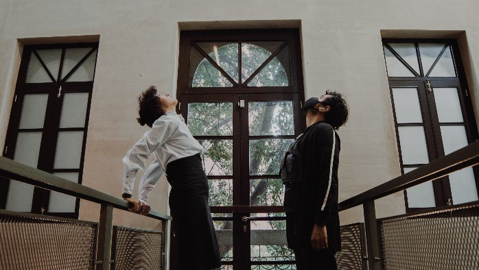

Lugares destacados en La Macarena
El barrio La Macarena, ubicado en el corazón de Bogotá, combina historia, cultura, gastronomía y educación en un entorno vibrante y accesible. A continuación, se presentan lugares emblemáticos del barrio, con información detallada sobre su misión, ubicación y aporte al tejido social Bogotano.
-

Fundación Cultural Colombia Negra
Tipo: Cultura / Afrocolombianidad
Dirección: Carrera 3 # 25-20, Bogotá
Horario: Lunes a viernes, 9:00 a.m. – 5:00 p.m.
Descripción: Organización dedicada a visibilizar y fortalecer la cultura afrodescendiente en Colombia. Ofrece talleres de danza, música, historia y derechos humanos, promoviendo la identidad negra en contextos urbanos.
-
Lachoco Latera Chocolatería
Tipo: Gastronomía / Chocolatería artesanal
Dirección: Calle 26 # 3-10, Bogotá
Horario: Todos los días, 8:00 a.m. – 8:00 p.m.
Descripción: Espacio dedicado al cacao colombiano de alta calidad. Ofrece degustaciones guiadas, postres, bebidas y productos artesanales. Es un referente del turismo gastronómico en el centro de la ciudad.
-
Capilla Nuestra Señora del Perpetuo Socorro - La Macarena
Tipo: Religión / Patrimonio histórico
Dirección: Calle 26 # 7-10, Bogotá
Misa: Domingos a las 10:00 a.m.
Descripción: Capilla del siglo XX con arquitectura tradicional, punto de encuentro espiritual y cultural para los habitantes del barrio. Participa en procesiones y festividades locales.
-

NC-arte
Tipo: Arte contemporáneo / Galería
Dirección: Calle 26 # 5-15, Bogotá
Horario: Martes a sábado, 10:00 a.m. – 6:00 p.m.
Descripción: Galería independiente que promueve artistas emergentes y proyectos críticos. Realiza exposiciones, charlas y residencias artísticas con enfoque social y político.
-
Matorral Librería
Tipo: Librería independiente / Cultura
Dirección: Calle 26 # 6-20, Bogotá
Horario: Miércoles a domingo, 11:00 a.m. – 7:00 p.m.
Descripción: Librería especializada en literatura latinoamericana, poesía, ensayo y libros de editoriales pequeñas. Espacio de encuentro para lectores, escritores y talleres culturales.
-
Universidad Distrital - Facultad de Ciencias y Educación
Tipo: Educación superior / Universidad pública
Dirección: Carrera 8 # 40-62, Bogotá
Programas: Matemáticas, Biología, Química, Pedagogía
Descripción: Facultad comprometida con la formación de docentes y científicos. Tiene proyectos de vinculación con escuelas del entorno y promueve la investigación en educación científica.
-

Ocio Gallery
Tipo: Espacio cultural / Arte experimental
Dirección: Calle 26 # 4-15, Bogotá
Horario: Jueves a domingo, 2:00 p.m. – 7:00 p.m.
Descripción: Espacio multidisciplinario que fomenta el arte contemporáneo desde enfoques críticos y comunitarios. Realiza exposiciones, performances, cine y talleres abiertos.
-

Beograd-Belgrado Restaurante Serbio
Tipo: Gastronomía internacional / Cocina balcánica
Dirección: Calle 26 # 8-20, Bogotá
Horario: Martes a domingo, 12:00 m. – 9:00 p.m.
Descripción: Restaurante familiar especializado en platos serbios como ćevapi, sarma y ajvar. Ofrece una experiencia auténtica de los Balcanes en pleno centro de Bogotá.
-

Restaurante Temático La Juguetería - Macarena
Tipo: Gastronomía temática / Familiar
Dirección: Calle 26 # 9-15, Bogotá
Horario: Todos los días, 12:00 m. – 10:00 p.m.
Descripción: Restaurante donde la decoración, los platos y el servicio evocan la infancia. Ideal para familias y amantes de lo lúdico, con un menú creativo y ambiente nostálgico.
-

Plaza de mercado La Perseverancia
Tipo: Comercio / Mercado público
Dirección: Calle 26 # 10-30, Bogotá
Horario: Todos los días, 5:00 a.m. – 6:00 p.m.
Descripción: Uno de los mercados más antiguos de Bogotá, con más de 80 años de historia. Ofrece frutas, verduras, carnes, flores, comida callejera típica y artesanías. Es un espacio vital para el comercio local.
Información: IDARTES - Mercados Públicos